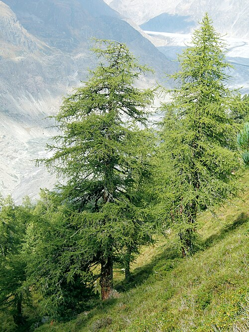

Trees are not a monophyletic taxonomic group but consist of a wide variety of plant species that have independently evolved a trunk and branches as a way to tower above other plants to compete for sunlight. The majority of tree species are angiosperms or hardwoods; of the rest, many are gymnosperms or softwoods. Trees tend to be long-lived, some trees reaching several thousand years old. The earliest trees evolved around 400 million years ago, and it is estimated that there are around three trillion mature trees in the world currently. A tree typically has many secondary branches supported clear of the ground by the trunk, which typically contains woody tissue for strength, and vascular tissue to carry materials from one part of the tree to another. For most trees the trunk is surrounded by a layer of bark which serves as a protective barrier. Below the ground, the roots branch and spread out widely; they serve to anchor the tree and extract moisture and nutrients from the soil. Above ground, the branches divide into smaller branches and shoots. The shoots typically bear leaves, which capture light energy and convert it into sugars by photosynthesis, providing the food for the tree's growth and development. Most trees reproduce by seeds. Flowering plants have their seeds inside fruit, while conifers carry their seeds in cones; tree ferns produce spores instead. Some trees also reproduce vegetatively, growing from root sprouts. Trees play a significant role in reducing erosion and moderating the climate. They remove carbon dioxide from the atmosphere and store large quantities of carbon in their tissues. Trees and forests provide a habitat for many species of animals and plants. Tropical rainforests are among the most biodiverse habitats in the world. Trees provide shade and shelter, timber for construction, fuel for cooking and heating, and fruit for food as well as having many other uses. In much of the world, forests are shrinking as trees are cleared to increase the amount of land available for agriculture. Because of their longevity and usefulness, trees have always been revered, with sacred groves in various cultures, and they play a role in many of the world's mythologies.